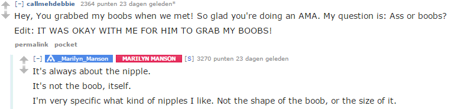
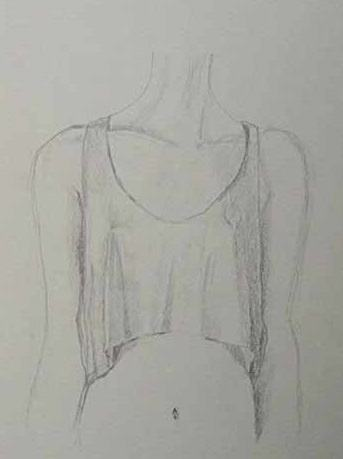
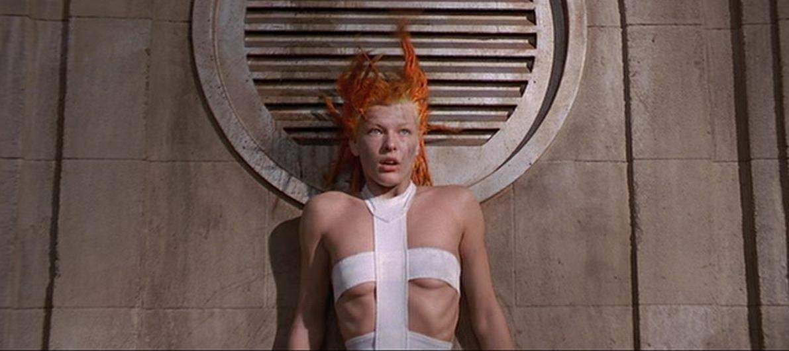
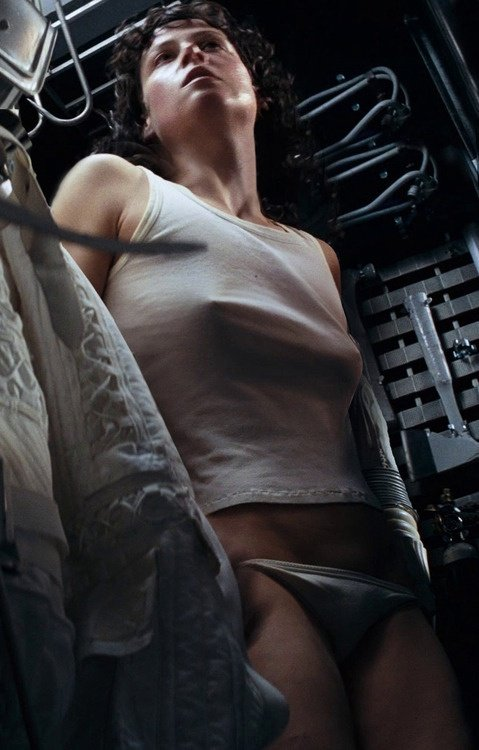
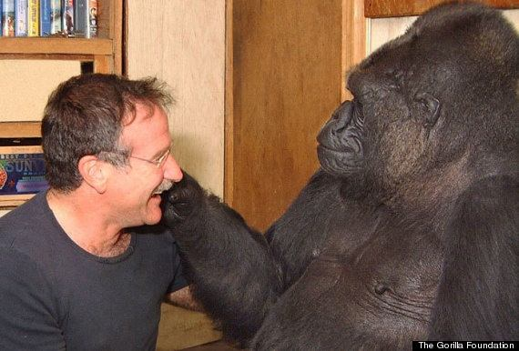
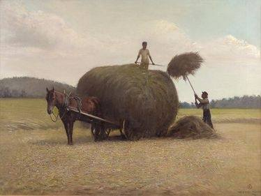

Salman Khan. In 1998 at MIT, Sal achieved three BSc degrees in mathematics, electrical engineering, and computer science whereafter he completed two MSc degrees in electrical engineering and computer science. He also holds an MBA from Harvard. He left his job as a hedge fund analyst after discovering educating millions of people—through his paragon teaching style—was in the realm of possibilities.
I believe the smartest people who roam the universe are simultaneously the most unpretentious because through hindsight they realise it is not inherent intelligence, but persistent passionate diligence, curiosity, and a willingness to grow that's key. They also took notice that the environment where kids grow up, which makes or breaks curiosity, is entirely up to chance; and an unfavourable one at that.
That being said, Sal chose sharing wisdom over utilizing it for lucrative intentions. And judging from his various degrees, the latter possibilities could've been endless. To this day Khan Academy has offered a helping hand to over 40 million people worldwide, for free!
His genuinely compassionate and charismatic approach has impacted and will continue to impact millions of lives. Team Khan Academy is closing the illusionary gap between the layman and the wonderful Shangri-La that is science. Ultimately leveling up our humanity. Sapere aude!
PS Obviously John von Neumann and Leonhard Euler were among the true geniuses, but I felt this message was important enough because too much human potential is wasted by a predominantly archaic education system.
---
All of life's experiences are shaped by our mind. Philosophy seeks to answer what is a good life; a healthy mind. Therefore, mastery of numbers and equations is in vain if the physicist does not know how to live. Does he live for the sake of progress and productivity? Or does he live for the sake of curiosity. Is he just living? Or does he feel alive. When philosophy dies, humanity dies with it.
---
Don't be fooled by the media and advertisements. Small breasts are equally attractive. Many think they only like a large bust, however, the nipples are doing the magic.
Source: Marilyn Manson 'Ass or boobs?' answer on Reddit.
I'd love it if women started removing their bra instead of plastic surgery. It's cheaper and more attractive beyond comparison. The breasts below I drew in school when we had to create a game character. To me, there is nothing sexier than a nipple poking the fabric. It's natural, it's not euphemized pornography.
I really dislike the media for mostly using female characters with huge breasts. Of course I'm attracted to them, but it sends the wrong message. Like they are the be-all and end-all. What happened to protagonists in the other spectrum?
Milla Jovovich in The Fifth Element:
Sigourney Weaver in Alien:
---
Feeling depressed is like a phantom pain. You can't imagine how it feels unless you lost a limb. Ever had your heart broken? When depressed you'd be happy feeling heartbroken because you at least feel something. It's still a bad example though. Depression is not really pain. It's nothingness. I don't know, like the absence of a soul. I'm having trouble finding the right words, it has been a long time since I've experienced it.
[Deleted account] describes it accurately.
“It's a empty, grasping kind of desperation to feel anything at all. It's a voided misery that consumes you, like you're sick, but on the inside, and there's no end in sight. This is why people commit suicide- because being gone is better than living in a severe and persistent depressive.”
It's important for people to learn what it is. I used to be very ignorant about depressed people, thinking they should get over it. Sadly, that is impossible. Being unconscious, be it by sleeping, drugs or suicide is the only solution.
It can happen to the best of us. I'm still saddened by the fact Robin Williams is here no more. Many other stand up comedians were (and are) afflicted: Richard Pryor, John Belushi, Chris Farley, Greg Giraldo… all died of drug use. Next to comedy, cocaine was their way to cope.
Personally Robin Williams stands out because I grew up with his movies. I still remember the first time I read he 'was an alcoholic'. "That can't be, he's not a bad man.", I thought. Only after feeling the 'voided misery' myself I could somewhat grasp how impossible it must be to live with it. Finding solace in drugs, alcohol being one of them, must have been a way to not feel unhappy all the time.
“If you know someone who's depressed, please resolve never to ask them why. Depression isn't a straightforward response to a bad situation; depression just is, like the weather.
Try to understand the blackness, lethargy, hopelessness, and loneliness they're going through. Be there for them when they come through the other side. It's hard to be a friend to someone who's depressed, but it is one of the kindest, noblest, and best things you will ever do.” —Stephen Fry
I'm convinced many comedians who take a critical look on society and the world, are more prone to depression. The “best” comedians—provided their material is based on a critical view of the world and their surroundings—are mostly wise and intelligent, therefore understand a lot of bad and sad things in our world. They use comedy to convey and elevate their thoughts on the matter. Still, the bad keeps lingering in the mind. It's a bit similar to meta-physicists who turn mad or depressed. Thinking about our life and consciousness can be overwhelmingly dark.
As an example, the image below can make me both unbelievably fascinated or bewildered.
To finally answer your question the same as Peter Flom. You say you want to be depressed because you've never been depressed. You have no idea how bad it is. No one wants to be truly depressed.
---
Many years ago, on a hot summer's day, some farmers were working on their field in front of our home. Under a scorching sun, hoisting straw bales upon their wagon seemed like hard work. As I had no job or responsibilities I went back inside.
After finding the next best ragged old shoes, equipped with the appropriate shabby clothing, I strolled onto the field towards them. “Hello. Could I help?” I asked, already sweating from lifting my feet over the bristly straw. The adult in command on top of the bales gently said: “There is no money involved.” I swiftly replied: “No need, I enjoy arduous physical labour.” They gave me a pitchfork and we proceeded draining our strength.
After a couple of hours all the bales were collected. My hands had some torn blisters which felt painful but strangely satisfying. As we leaned on the wagon the adult passed me a soda. It was the most refreshing soda I ever drank.
This now intensely nostalgic gratifying summer afternoon taught me some of the best lessons in life, which I could not see back then.
“Work consists of whatever a body is obliged to do. Play consists of whatever a body is not obliged to do.” ―Mark Twain, The Adventures of Tom Sawyer
“Happiness only real when shared.” ―Christopher McCandless
“One of the first conditions of happiness is that the link between Man and Nature shall not be broken.” –Leo Tolstoy
---
I was whispering to a classmate next to me in science class while the teacher was talking. She said: “If it's that interesting, why don't you share it with the entire class?” And so I did. I made up a story on the spot and started talking so everyone could hear. The whole class started laughing, teacher included. Made my day.
---